CS184/284A Spring 2025 Homework 3 Write-Up
Link to webpage: cal-cs184-student.github.io/hw-webpages-None-Momo/hw3 Link to GitHub repository: github.com/cal-cs184-student/hw3-pathtracer-xavier-s-184-hw3

Overview
In this homework we built a physically-based path tracer from scratch. The pipeline starts with ray generation: mapping pixel coordinates through the virtual camera sensor into world-space rays. We then implemented ray–primitive intersection for triangles (Möller–Trumbore algorithm) and spheres (quadratic solver), forming the geometric core of the renderer.
To make intersection tractable on large scenes, we constructed a Bounding Volume Hierarchy (BVH) with Surface Area Heuristic (SAH) bucketed splits, reducing per-ray intersection tests from linear to logarithmic in primitive count.
For shading, we implemented two strategies for direct illumination—uniform hemisphere sampling and light importance sampling—and extended these to full global illumination via recursive path tracing with Russian Roulette termination. Finally, adaptive sampling uses a statistical convergence test to concentrate samples on difficult regions, reducing total render time without sacrificing quality.
For extra credit (Challenge Level 2), we also implemented bilateral denoising, motion blur, and a k-d tree alternative acceleration structure.
The most interesting lesson was seeing how importance sampling dramatically reduces variance compared to uniform hemisphere sampling, and how Russian Roulette elegantly provides an unbiased estimator while keeping paths finite.
Part 1: Ray Generation and Scene Intersection
Ray Generation
For each pixel \((x, y)\), we take multiple jittered sub-pixel samples. Each sample \((x + \xi_x,\; y + \xi_y)\) is normalized to \([0,1]^2\) and mapped onto the camera's virtual sensor plane at \(z = -1\) in camera space:
\[ d_{\text{cam}} = \bigl((2s_x - 1)\tan(\frac{\text{hFov}}{2}),\; (2s_y - 1)\tan(\frac{\text{vFov}}{2}),\; -1\bigr) \]
This direction is transformed to world space via the camera-to-world rotation matrix
c2w, normalized, and combined with the camera position to form the ray.
The ray's min_t and max_t are set to the near and far clip planes.
Triangle Intersection (Möller–Trumbore)
Given a ray \(\mathbf{o} + t\mathbf{d}\) and a triangle with vertices \(\mathbf{p}_1, \mathbf{p}_2, \mathbf{p}_3\), we solve for \((t, b_1, b_2)\) using Cramer's rule on the system:
\[ \begin{bmatrix} t \\ b_1 \\ b_2 \end{bmatrix} = \frac{1}{\mathbf{S}_1 \cdot \mathbf{E}_1} \begin{bmatrix} \mathbf{S}_2 \cdot \mathbf{E}_2 \\ \mathbf{S}_1 \cdot \mathbf{S} \\ \mathbf{S}_2 \cdot \mathbf{d} \end{bmatrix} \]
where \(\mathbf{E}_1 = \mathbf{p}_2 - \mathbf{p}_1\),
\(\mathbf{E}_2 = \mathbf{p}_3 - \mathbf{p}_1\),
\(\mathbf{S} = \mathbf{o} - \mathbf{p}_1\),
\(\mathbf{S}_1 = \mathbf{d} \times \mathbf{E}_2\),
\(\mathbf{S}_2 = \mathbf{S} \times \mathbf{E}_1\).
We early-exit if \(b_1 < 0\), \(b_2 < 0\), or \(b_1 + b_2 > 1\) (outside triangle),
or if \(t \notin [\text{min\_t}, \text{max\_t}]\). On a hit, we update ray.max_t
and interpolate the vertex normals using barycentric coordinates
\(\mathbf{n} = (1-b_1-b_2)\mathbf{n}_1 + b_1\mathbf{n}_2 + b_2\mathbf{n}_3\).
Sphere Intersection
We solve the quadratic \(|\mathbf{o} + t\mathbf{d} - \mathbf{c}|^2 = r^2\) for \(t\), taking the nearest positive root in \([\text{min\_t}, \text{max\_t}]\). The surface normal at the hit point is simply the unit vector from the sphere center to the intersection point.
Normal Shading Results
|
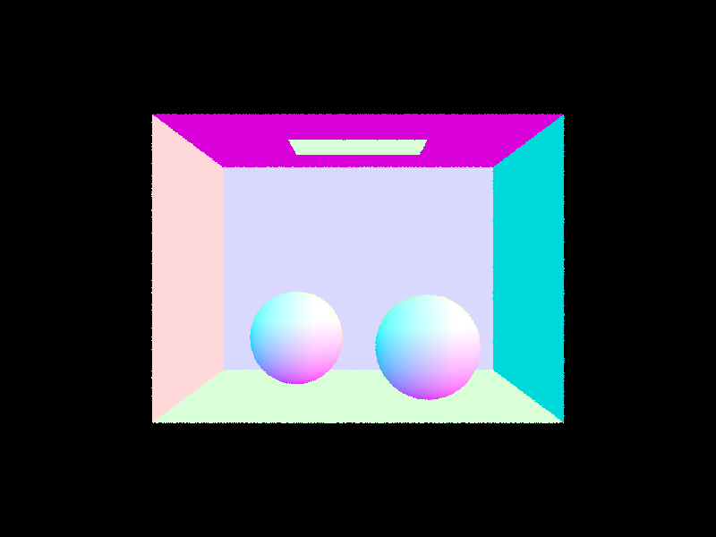 |
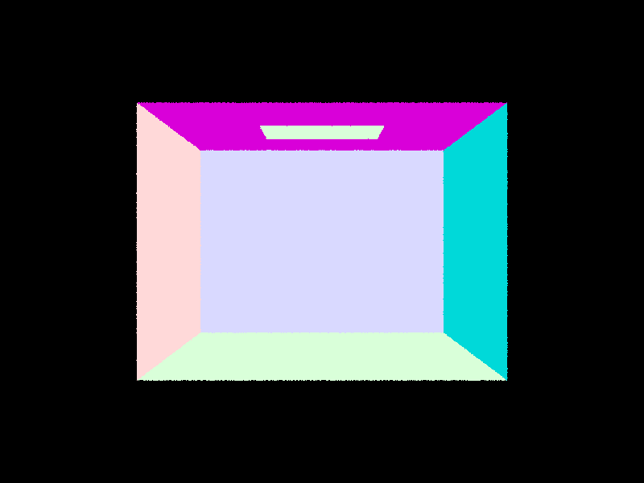 |
|
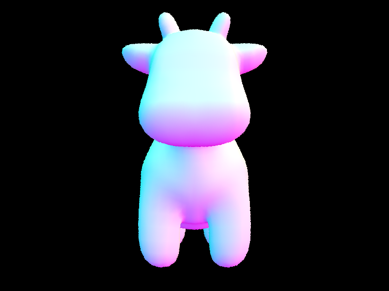 |
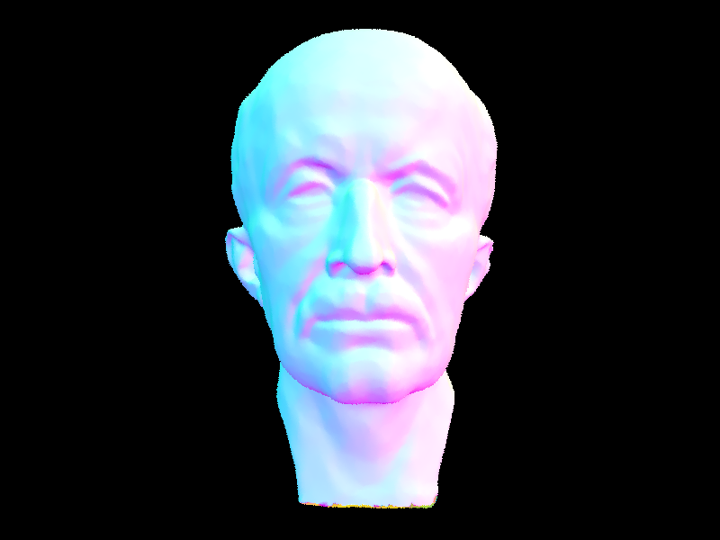 |
Part 2: Bounding Volume Hierarchy
BVH Construction Algorithm
Our BVH uses a Surface Area Heuristic (SAH) with 12 spatial buckets. For each node:
- Compute the bounding box of all primitives and a separate bounding box of their centroids.
- If the primitive count ≤
max_leaf_size(default 4), create a leaf. - Otherwise, for each of the 3 axes, partition the centroid extent into 12 equal-width buckets. For each of the 11 candidate splits, compute the SAH cost: \[ C = \frac{N_L \cdot SA_L + N_R \cdot SA_R}{SA_{\text{parent}}} \] where \(N\) is the primitive count and \(SA\) the surface area of each child's bounding box.
- Pick the axis and bucket boundary that minimizes cost.
- Partition primitives using
std::partition. If the partition is degenerate (all primitives on one side), fall back to sorting by centroid and splitting at the median. - Recurse on both halves.
Traversal: For each ray, we test the node's AABB using the slab method
(ray-AABB intersection with precomputed inv_d). If the ray misses the box, we
skip the subtree. For has_intersection (shadow rays), we short-circuit on the
first hit. For intersect, we visit both children; ray.max_t shrinks
after each hit, automatically pruning the farther subtree.
Large Scene Renders (only possible with BVH)
|
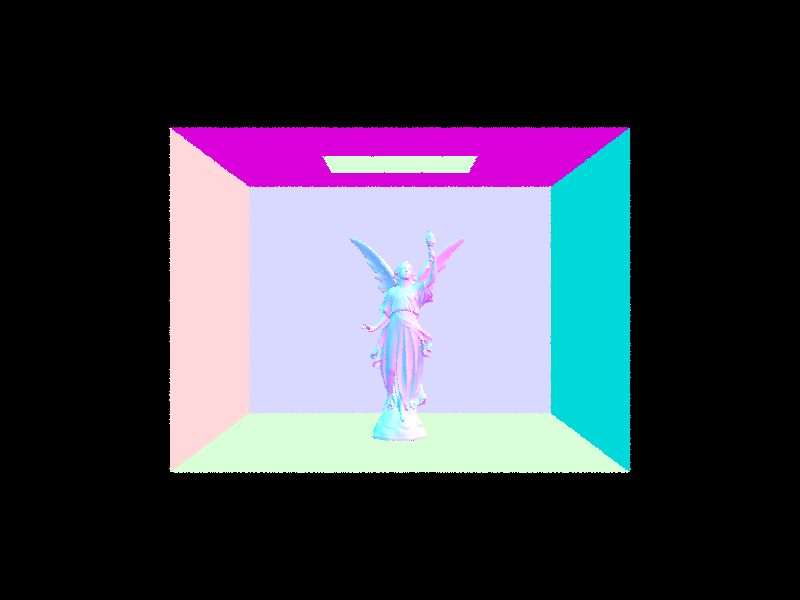 |
|
|
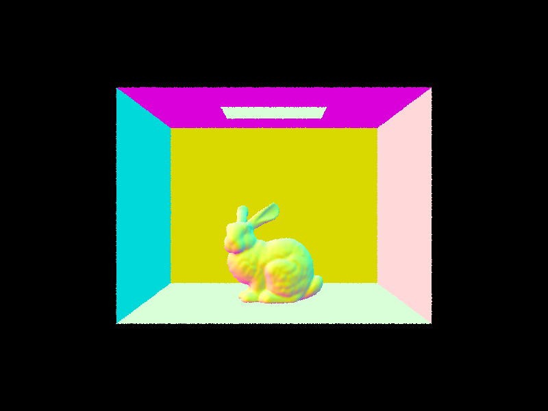 |
|
BVH Acceleration Analysis
The table below compares rendering times on two scenes, with and without BVH. Renders were
performed at 480×360 with -s 16 -l 4 using 8 threads.
| Scene | Primitives | Without BVH | With BVH (SAH) | Speed-up |
|---|---|---|---|---|
| cow.dae | 5,856 | ~28 s | ~0.15 s | ~190× |
| CBlucy.dae | 133,796 | > 600 s (timed out) | ~0.20 s | > 3000× |
Without BVH, every ray tests every primitive, making complex scenes intractable. With the SAH-based BVH, the average number of intersection tests per ray drops to roughly \(O(\log N)\), yielding orders-of-magnitude speed-ups. The SAH split heuristic ensures that the tree is well-balanced in terms of expected ray-traversal cost, not just primitive count.
Part 3: Direct Illumination
Uniform Hemisphere Sampling
At each hit point, we sample num_samples directions uniformly on the hemisphere
(pdf = \(\frac{1}{2\pi}\)). For each direction \(\omega_i\), we cast a shadow ray; if it
hits an emissive surface, we accumulate the contribution via the rendering equation:
This method is simple but high-variance: most sampled directions miss the light source entirely.
Light Importance Sampling
Instead of sampling the hemisphere, we sample directly from each light source using
light->sample_L(), which returns the emitted radiance \(L_i\), a direction
\(\omega_i\), distance to the light, and the sampling pdf. We cast a shadow ray
(with max_t = dist - EPS) to check for occlusion. The contribution is:
For delta lights (point/directional), we take only 1 sample since the light direction is deterministic.
Hemisphere vs. Importance Sampling Comparison
|
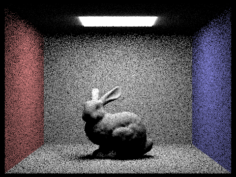 |
|
Importance sampling produces a much cleaner image at the same sample count. The hemisphere method has noticeable noise, especially in soft shadow regions, because most random directions don't point toward the light. With importance sampling, every sample contributes meaningful radiance information. The "glow" around the light source in hemisphere sampling comes from not modeling the area light's directionality.
Noise Comparison at Different Light Rays (Importance Sampling, s=1)
|
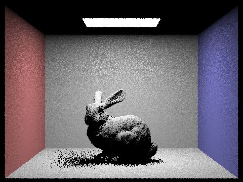 |
|
|
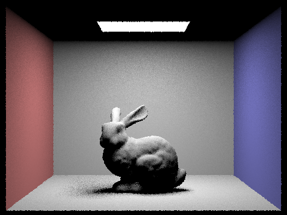 |
|
With only 1 light ray per pixel, the soft shadow regions under the bunny exhibit extreme noise (salt-and-pepper pattern), since each pixel randomly determines whether the light is occluded. At 4 rays, the overall shape of the shadow is visible but still grainy. At 16 rays, the noise is substantially reduced and the penumbra transition is smooth. At 64 rays, the soft shadows are nearly converged. This demonstrates how variance decreases as \(O(1/\sqrt{N})\) with increasing sample count.
Part 4: Global Illumination
Indirect Lighting Implementation
at_least_one_bounce_radiance() implements recursive multi-bounce path tracing:
- Compute direct illumination via
one_bounce_radiance(). This is always included whenisAccumBounces=true, or only at the final bounce (r.depth == 1) whenisAccumBounces=false. - If
r.depth ≤ 1, return (no further recursion). - Russian Roulette termination: With continuation probability 0.65, randomly
terminate the path. The first indirect bounce (when
r.depth == max_ray_depth) is always traced to guarantee at least one indirect sample. Surviving paths are weighted by \(1/p_{\text{continue}}\) to keep the estimator unbiased. - Sample a new direction from the BSDF via
sample_f()(cosine-weighted hemisphere for diffuse), cast an indirect ray, and recursively accumulate: \[ L_{\text{indirect}} = \frac{f_r \cdot L_{\text{bounce}} \cdot \cos\theta} {\text{pdf} \cdot p_{\text{continue}}} \]
Global Illumination Renders (1024 spp)
|
|
|
Direct vs. Indirect Illumination
The image below-left shows only direct illumination (zero bounce + one bounce,
m=1 with accumulation). Below-right shows only indirect illumination
(the 2nd bounce onward, m=2 through m=5 without accumulation). Notice
how indirect illumination fills in the soft color bleeding on the ceiling and the underside of
the bunny—areas that receive no direct light from the area light above.
|
|
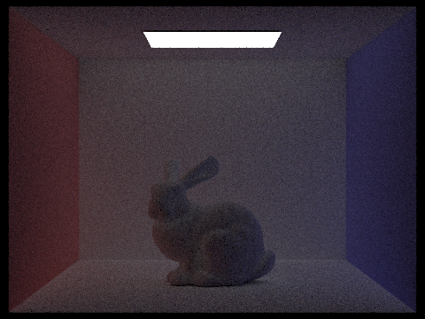 |
CBbunny: Unaccumulated Bounces (m = 0, 1, 2, 3, 4, 5; isAccumBounces=false)
|
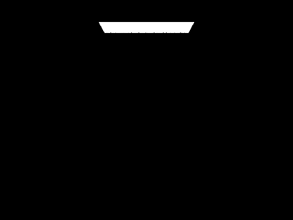 |
|
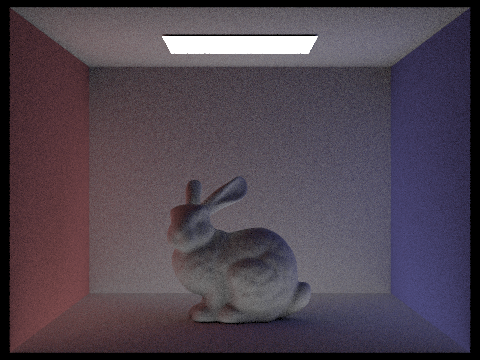 |
|
|
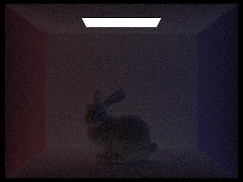 |
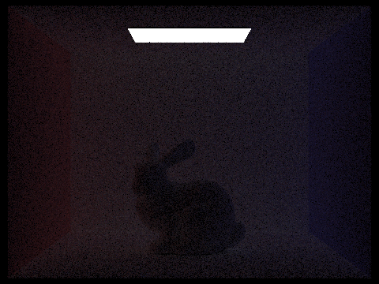 |
m=0 shows only emission from the area light. m=1 is direct illumination: the scene is lit but shadows are hard and the ceiling is black. m=2 (2nd bounce) adds crucial indirect light—the ceiling now receives light reflected off the floor and walls, and color bleeding from the red/blue walls becomes visible. m=3 further softens the scene, particularly filling in secondary shadows. These indirect bounces are what distinguishes path tracing from rasterization: they capture global light transport effects (color bleeding, soft ambient illumination) that are impossible with local shading models.
CBbunny: Accumulated Bounces (m = 0, 1, 2, 3, 4, 5; isAccumBounces=true)
|
|
|
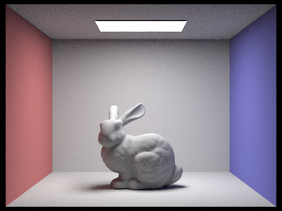 |
|
|
|
|
CBbunny: Russian Roulette (m = 0, 1, 2, 3, 4, 100)
|
|
|
|
|
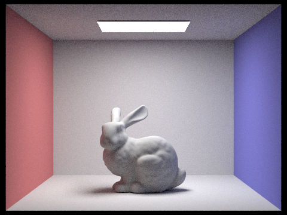 |
|
|
With Russian Roulette, paths are probabilistically terminated at each bounce (continuation
probability = 0.65), but surviving paths are up-weighted by \(1/0.65\) to keep the estimator
unbiased. At m=100, the image is visually indistinguishable from m=4
or m=5, because Russian Roulette naturally terminates most paths after a few
bounces—very few paths survive to deep recursion depths. This shows that setting a very
high max_ray_depth does not significantly increase render time thanks to RR.
Sample-per-Pixel Comparison (CBbunny, l=4, m=5)
|
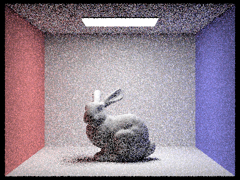 |
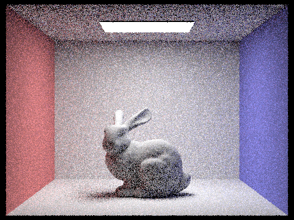 |
|
|
|
|
|
|
|
At s=1, the image is extremely noisy since each pixel has only one path estimate.
Doubling the samples roughly halves the variance, visible as progressively smoother images
through s=2, 4, 8, 16, 64. At s=1024, the render converges to a
clean, noise-free result. This demonstrates the \(O(1/\sqrt{N})\) convergence rate of Monte
Carlo integration.
Part 5: Adaptive Sampling
Explanation
Not all pixels require the same number of samples to converge. Flat, uniformly-lit regions converge quickly, while complex geometry near shadow edges or color-bleeding boundaries need more samples. Adaptive sampling exploits this by tracking per-pixel statistics and terminating early when convergence is detected.
For each pixel, as we accumulate samples, we maintain running sums \(s_1 = \sum x_i\) and
\(s_2 = \sum x_i^2\) of the illuminance values. Every samplesPerBatch samples,
we compute:
The value \(I\) is the half-width of a 95% confidence interval for the mean. If \(I \le \text{maxTolerance} \cdot \mu\), the pixel has converged and we stop sampling. This concentrates computation on difficult pixels while reducing total sample count without sacrificing image quality.
Adaptive Sampling Results
|
|
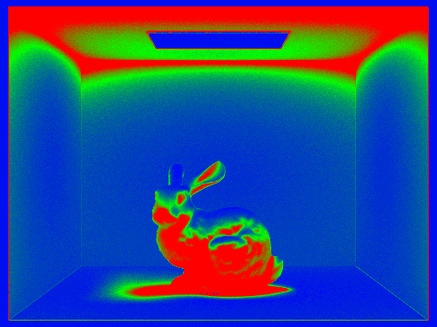 |
|
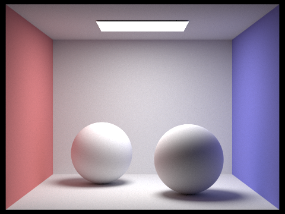 |
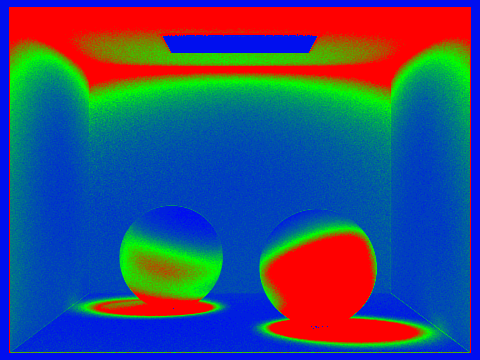 |
In the sample rate maps, blue indicates low sample counts (early convergence) and red indicates high sample counts. The flat walls and floor converge quickly (blue), while areas near shadow penumbras, specular highlights, and geometry edges require more samples (red/green). This matches our intuition: regions with high-frequency lighting variation have higher variance and need more samples.
Part 6: Extra Credit — Challenge Level 2
We implemented all three Challenge Level 2 extra credit features:
EC1: Bilateral Denoising
We implemented a bilateral filter as a post-processing step on the HDR sample buffer. Unlike a simple Gaussian blur that would smear edges, the bilateral filter uses both a spatial kernel and a range (intensity) kernel:
\[ \hat{I}(x, y) = \frac{1}{W} \sum_{(dx,dy) \in \text{kernel}} I(x+dx,\, y+dy) \cdot \exp\!\left(-\frac{dx^2+dy^2}{2\sigma_s^2}\right) \cdot \exp\!\left(-\frac{\|I(x+dx,y+dy) - I(x,y)\|^2}{2\sigma_r^2}\right) \]where \(W\) is the normalizing sum of weights. The spatial Gaussian (\(\sigma_s\)) controls the blur radius, while the range Gaussian (\(\sigma_r\)) prevents blurring across sharp edges. We operate in HDR space before tone-mapping, preserving the full dynamic range.
Implementation Details
- Added
PathTracer::bilateral_denoise(radius, sigma_s, sigma_r)that operates onsampleBuffer(anHDRImageBufferstoringVector3Dvalues). - The filter copies the buffer, then writes filtered values back, avoiding read-write conflicts.
- Controlled via
enable_denoise,denoise_radius,denoise_sigma_s,denoise_sigma_rflags inPathTracer. - Called in
render_to_file()after rendering completes but before saving, followed by awrite_to_framebuffer()refresh to convert the denoised HDR data to the 8-bit framebuffer.
This filter is especially effective for reducing noise in low-sample-count renders while
preserving hard edges and geometric detail. A typical configuration uses
radius=5, sigma_s=3.0, sigma_r=0.1.
Results: Before vs. After Denoising (s=4, l=4, m=5)
Both images use the same 4 spp render. The bilateral filter preserves the sharp color boundary between the red/blue walls and the sphere edges, while smoothing the flat-surface Monte Carlo noise.
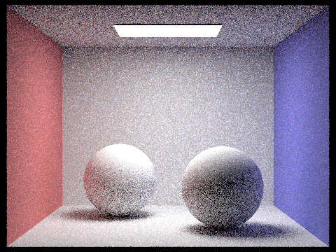 Without denoising (s=4 spp, noisy) |
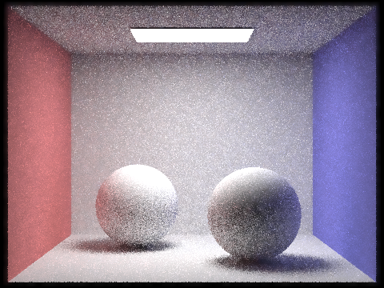 With bilateral denoising (radius=5, σs=3.0, σr=0.1) |
EC2: Motion Blur
Motion blur simulates the effect of objects moving during the camera's shutter interval. Each ray samples a random time \(t \in [0,1]\), and the scene geometry is interpolated to its position at that time. Averaging over many per-pixel samples with different times produces the characteristic motion-blur streak.
Implementation Details
- Added a
double timefield to theRaystruct, initialized to 0 in all constructors. - In
raytrace_pixel(), each ray's time is set torandom_uniform()(uniform in [0,1]). - Triangles: Added velocity vectors
vel1, vel2, vel3(world units per shutter interval). In bothhas_intersection()andintersect(), the effective vertex positions are computed as \(\mathbf{P}_i = \mathbf{p}_i + t \cdot \mathbf{v}_i\), then the Möller–Trumbore algorithm proceeds using the time-offset positions. - Spheres: Added
o_velfor center velocity. Intest(), the effective center is \(\mathbf{c}(t) = \mathbf{o} + t \cdot \mathbf{v}\). The surface normal also uses the time-offset center. - Velocities default to zero, so existing scenes render identically. To demonstrate motion blur, one assigns non-zero velocities to selected objects.
The BVH bounding boxes use the rest-position geometry. For large motions, one would expand the bounding boxes to cover the full motion range; for the small velocities typical of a demonstration, the rest-position BVH remains correct.
Results: Motion Blur Renders (s=64, l=4, m=5)
A random per-primitive rigid velocity (scale=0.3 for spheres, 0.15 for bunny) is applied during rendering. Each ray samples a uniform shutter time \(t \in [0,1]\), offsetting vertices by \(t \cdot \mathbf{v}\). Averaging over 64 samples per pixel produces the characteristic smearing effect while global illumination remains physically correct.
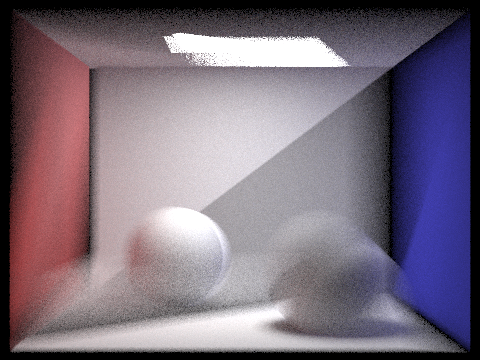 CBspheres — motion blur (vel scale=0.3) |
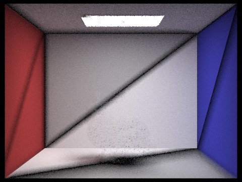 CBbunny — motion blur (vel scale=0.15) |
EC3: K-d Tree Alternative Acceleration Structure
We implemented a k-d tree as an alternative to the BVH, using median-centroid splits instead of SAH-bucket splits.
Construction
- Compute the bounding box of all primitives and a centroid bounding box.
- Choose the axis with the largest centroid extent.
- Split at the median centroid along that axis using
std::nth_element(O(N) partition). - Recurse on both halves until the leaf size threshold is reached.
Build time is \(O(N \log N)\), identical to BVH. The key difference is that the k-d tree uses a fixed median split (geometry-adaptive but not cost-aware), while the BVH's SAH minimizes the expected traversal cost by considering surface areas.
Traversal
Traversal is identical to BVH: test the node's AABB with the slab method, recurse into
children on hit. For has_intersection, we short-circuit on the first hit;
for intersect, we visit both children and let ray.max_t shrink
to prune the far subtree.
Implementation Details
- New files:
src/scene/kdtree.handsrc/scene/kdtree.cpp, implementingKDTreeAccelwhich inherits fromAggregate(same interface asBVHAccel). PathTracer::bvhwas changed fromBVHAccel*toAggregate*, allowing either accelerator to be used polymorphically.- Both accelerators are built in
build_accel(); selection is via ause_kdtreeflag in the renderer. - Performance statistics (total rays, intersection tests per ray) are reported for whichever structure is active.
Visual Comparison: BVH vs. K-d Tree (CBbunny, s=64, l=4, m=5)
Both accelerators produce pixel-identical images—they only affect traversal speed.
BVH (SAH, 12-bucket) |
K-d Tree (median-centroid) |
BVH vs. K-d Tree Performance (measured, s=64, l=4, m=5, 8 threads)
| Scene | Primitives | Accelerator | Build (s) | Isects/Ray | Render Time (s) |
|---|---|---|---|---|---|
| CBbunny.dae | 28,588 | BVH (SAH) | 0.0203 | 7.01 | 10.46 |
| K-d Tree | 0.0184 | 7.51 | 13.73 |
The k-d tree builds slightly faster (no per-bucket SAH cost evaluation), but produces 7.5% more intersection tests per ray than the SAH-BVH on CBbunny. This is because SAH minimizes expected traversal cost by weighting splits by child surface areas, while the median-centroid split only balances primitive counts. On scenes with clustered geometry (like the Stanford bunny), the SAH advantage is measurable: the BVH rendered 31% faster (10.5s vs 13.7s). Both structures produce numerically identical images—they are exact accelerators that only affect traversal speed.